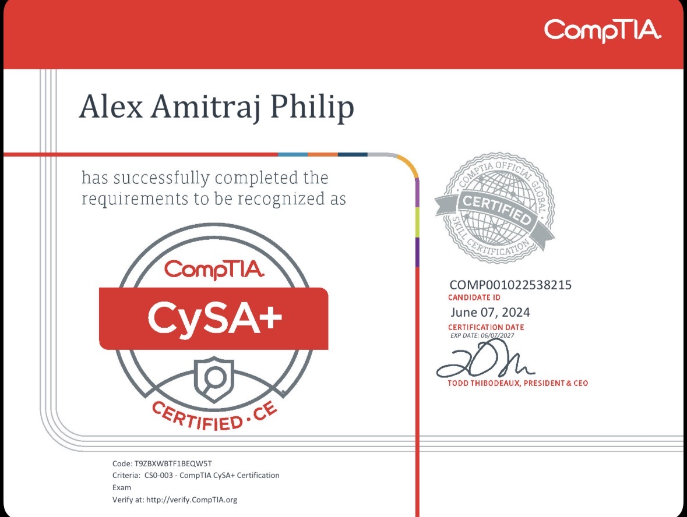
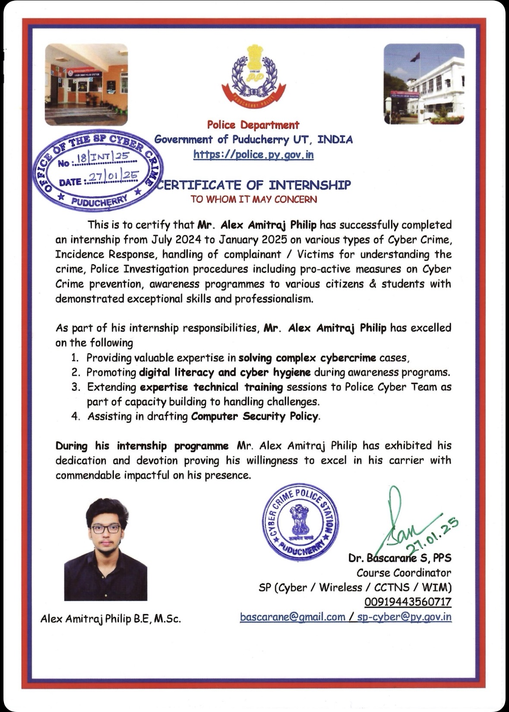

Cybersecurity | Application Security | Incident Response
I'm Alex Amitraj Philip, a cybersecurity professional with a Master's degree in Information Security. My interests include application security, network security, and incident response. I enjoy analyzing threats, investigating security incidents, and building practical solutions to improve system security.
Through my experience in cybersecurity projects and my internship with the Cybercrime Department of the Government of India, I have developed hands-on skills in digital forensics, security monitoring, and vulnerability analysis. I am passionate about continuously learning and contributing to building secure and resilient systems.
Currently, I am actively strengthening my cybersecurity expertise through continuous hands-on practice and real-world security labs. I am working on practical blue-team investigations and threat detection challenges on Blue Team Labs Online, where I analyze logs, investigate security incidents, and develop incident response and threat hunting skills. In parallel, I am advancing my penetration testing and defensive security knowledge through structured learning paths and labs on TryHackMe. These platforms allow me to simulate real-world attack scenarios, understand adversary techniques, and practice identifying vulnerabilities and mitigating threats. Through this ongoing work, I continue to build practical skills in threat analysis, security monitoring, incident investigation, and network defense while strengthening my overall understanding of modern cybersecurity operations.
Python tool that analyzes .eml email headers to detect phishing indicators, extract sender IP addresses and highlight suspicious patterns used in phishing campaigns.
View on GitHubSecurity log analysis tool that detects suspicious authentication activity and identifies potential brute-force attacks through automated log parsing.
View on GitHubThreat intelligence tool that extracts IP addresses from logs and evaluates their reputation using AbuseIPDB to identify potentially malicious hosts.
View on GitHubHybrid machine learning system using Neural Networks, Random Forest and XGBoost to detect fraudulent financial transactions.
Security lab environment used to investigate logs, configure firewall rules and practice real-world incident investigation techniques.


This website will continue to evolve as I expand my work and share more insights from my cybersecurity journey. Over time, I will be adding detailed cybersecurity blog posts, technical security write-ups, and documentation of projects that demonstrate my practical experience and learning. These updates will include topics such as threat analysis, malware investigation, incident response, network security investigations, and hands-on cybersecurity labs. My goal is to use this platform as a knowledge repository where I document investigations, research findings, and technical experiments while continuously improving my skills in cybersecurity. By sharing these materials, I hope to contribute to the broader cybersecurity community while also showcasing my ongoing learning, analytical approach, and technical capabilities in the field. New content will be added regularly as I continue working on practical security challenges, certifications, and research within the cybersecurity domain..